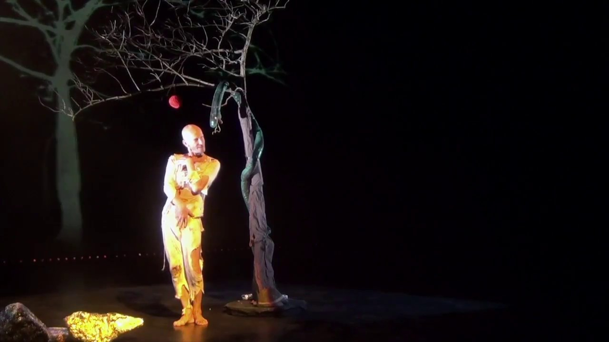

Welcome to 86- lemn
Kino - Дерево (Derevo) versuri + traducere în Germană
2020.09.22 02:45
Devino un traducător Cere o nouă traducere de versuri Meniu Versuri Artişti Cântece Traduceri Cereri de traducere Cereri de transcriere Collections Expresii Limbi Acţiuni Adaugă o nouă traducere Adaugă un cântec nou Cere o nouă traducere Cere transcripţia versurilor Adaugă o nouă expresie Deschide thread în forum Register Comunitate Membri Forum Subiectele noi din forum Comentarii recente Conţinut popular Noțiuni de bază Cere o nouă traducere de versuri Devino un traducător Regulile website-ului Întrebări des puse Lyricstranslate.com Forum Autentificare Înregistrare Română Deutsch English Español Français Hungarian Italiano Nederlands Polski Português (Brasil) Română Svenska Türkçe Ελληνικά Български Русский Српски العربية 日本語 한국어 Artişti Cântece Traduceri Collections Cereri Comunitate Limbi Ajutor Autentificare Înregistrare Publicitate LT Rusă , Engleză Kino Дерево Germană
Дерево (Derevo) (traducere în Germană)
Artist: Kino (Кино) Cântec: Дерево (Derevo) 10 de traduceri Traduceri: Cehă , Engleză , Franceză , Germană, Poloneză , Română , Spaniolă , Transliteraţie , Turcă 1 more ✕ Corectură cerută traducere în Germană Germană A ADer Baum
Ich weiß - mein Baum wird keine Woche überleben, Ich weiß - mein Baum ist in dieser Stadt dem Untergang geweiht, Doch ich verbringe meine gesamte Zeit mit ihm. Alle anderen Dinge bin ich leid. Mir scheint, dass er mein Zuhause ist. Mir scheint, dass er mein Freund ist. Ich habe einen Baum gepflanzt. Ich habe einen Baum gepflanzt. Ich weiß - mein Baum wird vielleicht morgen von einem Schulkind ausgerissen, Ich weiß - mein Baum wird mich bald verlassen. Doch solange es ihn gibt, bin ich immer bei ihm. Ich bin bei ihm in guten, wie in schlechten Tagen. Mir scheint, dass er meine Welt ist. Mir scheint, dass er mein Sohn ist. Ich habe einen Baum gepflanzt. Ich habe einen Baum gepflanzt. Mulțumesc! ❤ thanked 5 times © Vera Jahnke Postat de Vera Jahnke la Sâmbătă, 05/09/2020 - 12:07 Rusă / Romanization / Romanization 2 / Transliteraţie RusăДерево (Derevo)
Fă click aici pentru a vedea versurile originale
✕ Publicitate Adaugă o nouă traducere Adaugă o nouă cerere Traduceri ale cântecului "Дерево (Derevo)" Cehă Edvard Sidoryk Engleză gaba.roadends Franceză purplelunacy Germană Vera Jahnke Poloneză zanzara Română Voldimeris Spaniolă Andrés Karamázov Transliteraţie Guest Turcă vodkapivo Ucraineană Vitaly Klyuyev Collections with "Дерево" 1. КИНО - 45 - full album (1982) Kino: Top 3 1. Группа крови (Gruppa krovi) 2. Перемен (Peremen) 3. Звезда По Имени Солнце (Zvezda po imyeni Solntse) Comentarii Autentifică-te sau înregistrează-te pentru a adăuga comentarii Music Tales Read about music throughout history Read Despre traducător Vera Jahnke Nume: Verula Rol: Super Member Contribuţie: 1062 de traduceri, 2 transliterations, i s-a mulţumit de 3626 de ori, A rezolvat 111 de cereri a ajutat 44 membri, transcris 3 songs, a adăugat 20 expresii, a explicat 24 expresii, left 3127 comments, added 1 annotation Limbi: native Germană, fluent Engleză, studied Japoneză, Klingon, Olandeză, Rusă, Spaniolă Activitate pe site Traducere nouă Eivør - Gullspunnin Faroese Engleză Traducere nouă Zack Hemsey - Remember Me Engleză Turcă Traducere nouă Christina Perri - A Thousand Years Engleză Suedeză Comentariu nou yes it is mai multe Traducere nouă Zack Hemsey - The Runner Engleză Turcă Traducere nouă David Gilmour - Faces of Stone Engleză Rusă Traducere nouă The Doors - Spanish Caravan Engleză Rusă Comentariu nou Oh, thank you. Of course, you are right ! So, I ... mai multe Traducere nouă Eva Polna - Без тебя (Bez tebya) Rusă Kurdish (Kurmanji) Nouă cerere de transcriere Angela Similea - Cat as fi vrut lyrics request Română TRADUCERI Artişti Cântece Traduceri Cereri Cereri de transcirere Limbi + Adaugă o nouă traducere + Cere o traducere COMUNITATE Membri Forum Subiectele noi din forum Comentarii recente Site statistics Expresii Collections LyricsTranslate Regulile website-ului Întrebări și răspunsuri Contact Politica de confidenţialitate Copyrights Resurse folositoare © 2008-2020 LyricsTranslate.comTheme
